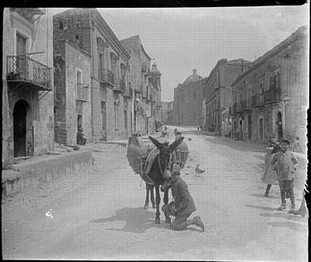

Ra'bato - Santa Croce


{%trans "Arte Rabato"%}
{%trans "Passo Scelto Rabato"%}
IL VITALIZIO
PIAZZA SANTA CROCE, RABATO PIAZZA RAVANUSELLA, SANTA LUCIA , VIA ATENEA, VIALE DELLA VITTORIA
Con le braccia appoggiate sulle gambe discoste e lasciando pendere come morte le mani terrose, il vecchio Maràbito sedeva sul logoro muretto accanto alla porta della roba.
Casa e stalla insieme, col pavimento fatto coi ciottoli del fiume (dove non mancavano), quella vecchia roba cretosa e annerita gli faceva sentire, ancora per poco, il suo alito: quell'odor grasso e caldo del concio, quel tanfo secco e acre del fumo stagnato, ch'erano per lui l'odore stesso della sua vita.
Contemplava intanto il suo podere, sbattendo continuamente gli occhietti vitrei infossati, che gli restavano duri e attoniti quasi a dispetto delle palpebre.
Sotto il cielo velato gli alberi stavano immobili, come se, sospesi nella pena con cui il vecchio padrone ora li guardava, così dovessero durare anche quand'egli non ci sarebbe stato più.
Qualche gazza appostata, però, pareva sghignasse beffarda, a quando a quando: mentre di tra le stoppie riarse, sui piani e i poggi delle Quote, le calandre alternavano il loro ciaucìo stridulo gioioso.
S'aspettavano le prime acque, dopo le quali sarebbe cominciato il tempo delle fatiche per la campagna: la rimanda, l'aratura, la semina.
Tre volte Maràbito scosse la testa, perché ormai non erano più per lui quelle fatiche.
Lo riconosceva da sé.
Tanto che entrando col marzo i mesi grandi, aveva detto a sé stesso
« Questa sarà l'ultima stagione! »
E s'era mietuto l'orzo e abbacchiate le mandorle, lasciando ai nuovi padroni l'abbacchiatura delle olive e la vendemmia.
Quel giorno appunto dovevano venire a prendere possesso del podere.
Avrebbe fatto loro la consegna, e addio!
« La morte, quando il Signore comanda, verrà a picchiarmi alla porta lassù.»
Alzò gli occhi, così pensando, a Girgenti che sedeva alta sul colle con le vecchie case dorate dal sole, come in uno Scenario; e cercò nel sobborgo Ràbato, che pareva il braccio su cui s'appoggiasse così lunga sdraiata, se gli riusciva scorgere il campaniletto di Santa Croce, ch'era la sua parrocchia.
Aveva là presso un vecchio casalino, dove avrebbe chiuso gli occhi per sempre:
- E presto sia!
- sospirò.
- Come avvenne a Ciuzzo Pace.
Prima di lui, Ciuzzo Pace aveva ceduto per un vitalizio d'una lira al giorno l'attiguo poderetto al mercante Scinè, soprannominato il Maltese; e, dopo appena sei mesi, era morto
Ora il silenzio, che pareva fervesse lontano lontano d'un sordo ronzio di mosche che pure erano vicine, dava arcanamente il senso di quella morte; ma il vecchio non ne aveva sgomento; piuttosto come un'angoscia
Era solo, perché non aveva mai voluto né donne né amici; sentiva pena per quel suo podere, a lasciarlo dopo tanto tempo.
Conosceva gli alberi uno per uno; li aveva allevati come sue creature: lui piantati, lui rimondati, lui innestati; e la vigna, tralcio per tralcio.
Pena per il podere e pena anche per le bestie che tant'anni lo avevano aiutato: le due belle mule che non s'erano mai avvilite a tirar l'aratro per giornate sane; l'asinello che valeva più delle mule, e Riro il giovenco biondo come l'oro, che tirava da sé senza benda né guida l'acqua del pozzo, pian piano, com'egli l'aveva ammaestrato.
La noria a ogni giro della bestia dava un fischio lamentoso.
Egli, da lontano, contava quei fischi; sapeva quanti giri ci volevano a riempire i vivai, e si regolava.
Ora, addio Riro! E il fischio della noria, da quel giorno in poi, non l'avrebbe più udito.
- Sette,
- contò intanto, ché, pur tra i pensieri, il conto dei giri per la lunga abitudine non lo perdeva mai.
Le mule e l'asinello erano impastoiate su l'ala a rimpinzarsi di paglia.
Paglia, quanta ne volevano! Anche ad esse il vecchio Maràbito rivolse uno sguardo.
Come le avrebbe trattate il nuovo padrone? Alla fatica erano avvezze, povere bestie, ma anche alla loro razione d'orzo e cruschello, ogni giorno, oltre la paglia.
O che avevano quel giorno le calandre? Strillavano sui piani più del solito, come se sapessero che il vecchio doveva andarsene e lo salutassero.
Dallo stradone, tutt'a un tratto, venne un allegro rumor di sonagli.
Ma il vecchio si cangiò in volto.
- La carrozza: eccolo:
- disse; e andò incontro al nuovo padrone, tirandosi sulle spalle la giacca che teneva appesa addosso, con le maniche spenzolanti.
Da cassetta, Grigòli, il garzone che don Michelangelo Scinè teneva di guardia al poderetto già di Ciuzzo Pace, gli gridò:
- Allegro, oh, zi' Marà!
Ma allegro lui, se mai, Grigòli, che da quel giorno avrebbe mangiato a due greppie, abbattuto il morello di cinta che separava il podere di Maràbito da quello del povero Pace.
Fortuna e dormi! S'era cattivata la fiducia del Maltese, chi sa poi perché, così tracagnotto, con gli occhi tondi e ridenti, e quella puntina di naso che gli s'alzava quasi incuriosita, all'insaputa della faccia da pacioccone senza malizia.
Ma l'aveva, e come! la sua malizia anche lui; bastava guardargli quel naso.
Intanto, con l'aiuto del vetturino, don Michelangelo poté scendere dalla carrozza: uno di que' sganasciati landò d'affitto con l'attacco a tre, che puzzano di rimessa lontano un miglio e servono con gran fracasso di sonagliere per le scampagnate.
Ne scese con lo stesso stento la moglie si
-donna Nela, e subito, prendendosi con due dita la veste, cominciò a spiccicarsi tutta; poi ne scesero le figlie: due ragazzone gemelle.
Sembravano tutt'e quattro un tino una botte e due caratelli.
La carrozza, risollevandosi sulle molle, parve rifiatasse; i cavalli no, poveri animali, tutti imbrattati di schiuma e sgocciolanti di sudore.
- Serv'a Voscenza,
- salutò appena Maràbito.
Rotto al lavoro da tanti anni, parlava poco di solito, e ora per giunta provava quasi vergogna pensando che, per quella cessione che faceva del suo podere, il mantenimento gli sarebbe venuto ancora da esso, ma non più in compenso del suo lavoro.
Auff, si crepa!
- sbuffò lo Scinè, asciugandosi col fazzoletto il faccione congestionato.
- Quattro miglia di stradone! A guardare dalla città, non credevo che fosse così lontano!
Era una prima botta, questa, da mercantuccio rifatto, la quale dava a vedere come fosse venuto col proposito di disprezzare tutto.
Non per nulla la gente del paese se lo richiamava con piacere alla memoria lacero e impolverato su per le viucole a sdrucciolo del quartiere di San Michele con la balla della mercanzia sulle spalle e la mezzacanna in una mano, tutto sudato mentre dell'altra si faceva portavoce nel gridare:
- Roba di Fràaancia!
S'era arricchito in poco tempo con l'usura, e ora troneggiava, seduto sotto il lampadino della Madonna, dietro il lungo banco del suo negozio di panneria, ch'era il più grande di tutta la via Atenèa.
La signora Nela, dalla faccia di melanzana piantata senza collo sopra le poppe enormi, non apriva bocca se prima non si consigliava con gli occhi del marito.
Ma a una delle figliuole, girando lo sguardo sul ciglione lì vicino, su cui sorgono i due Templi antichi, quello di Giunone da una parte e quello detto della Concordia dall'altra, in un soprassalto d'ammirazione scattò proprio dal cuore:
- Uh bello, papà!
Il Maltese la fulminò con una guardataccia.
Sapeva bene il valore del podere, e che Maràbito aveva già compiti settantacinque anni.
Ora, dandosi a vedere per un verso mal contento del podere e per l'altro contento dello stato di salute del vecchio, sperava di potere ancora lesinare sul vitalizio di due lire al giorno già convenuto.
La terra è terra, soggetta alle vicende del tempo, e due lire al giorno son due lire al giorno.
Ma non gli venne fatto.
Visitando passo passo il podere, non ebbe proprio dove metter pecca; e quell'animaluccio di Grigòli pareva glielo facesse apposta!
- Qua qua, guardi qua!
E con le mani sollevava i pampini d'una vite per mostrare certi grappoli più grossi d'una poppa della signora Nela.
- Qua qua, guardi qua!
E mostrava nell'agrumeto, ch'egli chiamava giardino, certe lumìe, certi portogalli, la cui vista soltanto, a suo dire, ricreava il cuore.
- Questo giardino, Eccellenza, è vermiglio così tutto l'anno!
Michelangelo Scinè guardava e chinava la testa, brusco.
Non potendo far altro (o fors’anche in grazia di quell'Eccellenza che Grigòli non gli risparmiava) fingeva di sbuffare per il caldo.
- Si crepa! si crepa!
Maràbito non parlava: gli seccava anzi che parlasse tanto Grigòli, essendosi accorto che lo Scinè a mano a mano s'intozzava dalla bile.
Più volte, infatti, come se non avesse udito i continui richiami di Grigòli, era passato diritto o s'era fermato con gli occhi socchiusi e l'indice d'una mano sulla punta del naso, quasi assorto in qualche conto complicato.
Grigòli però senza scomporsi, s'era rivolto alla si
-donna Nela e alle due ragazzone:
- Qua qua, guardino qua!
Tanto che Maràbito, alla fine, stimò prudente ammonirlo
- E zitto, via, Grigoletto! I padroni hanno occhi per vedere da sé.
Fece peggio.
Grigòli, imperterrito, incalzò:
- Avete ragione! La vostra bocca non parla mai! Ah, non per vantarlo di presenza, ma la verità è verità: un altr'uomo fatto per la fatica come Zio Maràbito non c'è mai stato e non ci sarà mai: vero maestro per la campagna, poi; quanto a rimandare, a innestare, a potare, uguale forse sì, ma meglio di lui in tutto il territorio di Girgenti non si ritrova.
Qua, qua questi mandorli innestati da lui; piante massaje come queste non ce n'è: ogni albero tre, quattro staja l'anno, che Voscenza può contarci a occhi chiusi.
E questi albicocchi qua? Se Voscenza ne assaggia il frutto non se lo può più levar di bocca: vera rarità! Pero, questo, signorinella; fa pere grosse così! Terra come questa non ce n'è: non ci manca nulla! E Maràbito, in coscienza, se l'è meritata, che ha saputo lavorarla come Dio comanda.
Peccato che ora è vecchierello.
.
.
Don Michelangelo non ne poteva più.
Proruppe:
- Che vecchierello, somarone, che vecchierello! Non vedi che cammina meglio di me?
- Questo non vuol dire!
- rispose con un sorrisa da scemo Grigòli.
- Voscenza m'è padrone, e non per contraddirla, ma così bello grasso, voglio dire in salute com'è Voscenza, non è tanto facile camminare ora qua per la vigna.
La vigna era zappata di fresco, e veramente ci s'affondava, col pericolo anche di slogarsi un piede.
Ne esalava poi un senso d'umido, corrotto in basso nell'afa di quelle giornate ancora di sole caldo; e don Michelangelo, stronfiando, ne soffriva come d'una smania che gli si fosse messa allo stomaco.
Ma era anche per la parlantina di quel ménchero là.
- E chétati una buona volta! Parli più d'un giudice povero! Il podere è buono, il podere è buono, non dico di no, ma.
.
.
ma.
.
.
ma.
.
.
E seguitò la frase movendo l'indice e il medio d'una mano: il che significava: due lire al giorno son due lire al giorno.
- Padrone mio,
- intervenne a questo punto Maràbito, fermandosi:
- domani all'alba io me n'andrò su al paese, e stia sicuro che ci andrò a morire, perché quella ch'è stata finora la mia vita la lascerò qua, in questa terra.
Non mi piace parlare; ma ciò ch'è giusto glielo debbo dire.
Non creda ch'io stia facendo questo negozio per poca voglia di lavorare.
Ho lavorato fin da quand'ero ragazzo di sett'anni; e vita e lavoro per me sono stati sempre una cosa sola.
Sappia che lo faccio, non per me, ma per la mia terra che con me patirebbe, perché non sono più buono da lavorarla come il mio cuore vorrebbe e l'arte comanda.
In potere di Voscenza e di Grigoletto che sa l'arte meglio di me, sono sicuro che alla terra non mancherà mai nulla e sono pronto a staccarmene ora stesso, senza neanche fiatare.
Ma se Voscenza non è più contento, me lo dica chiaro e non ne facciamo più niente.
La signora Nela e le due figliuole non s'aspettavano quest'uscita del vecchio e lo guardarono allocchite.
Ma don Michelangelo, da volpe vecchia, esclamò sorridendo, rivolto a Grigòli:
- E tu mi dicevi che non parla! alla grazia!
Poi, rivolto a Maràbito:
- O che debbo dirvi, dunque, che siete vecchio stravecchio e in punto di morte?
- Come sono, Voscenza lo vede,
- rispose il vecchio, aprendo le braccia.
- Gli anni miei non li so.
So che mi sento stanco.
E Voscenza, ripeto, può star sicuro che dei suoi belli denari con me non ne sciuperà molti.
Prendo la via di Ciuzzo Pace, ch'è per me la migliore, e lor signori si godranno il tondo e spero in Dio che non me lo faranno patire.
- Hanno abbattuto gli albicocchetti davanti la roba
- diceva Maràbito, appena quindici giorni dopo, alle vicine della Piazzetta di Santa Croce.
Chiudeva gli occhi e li rivedeva tutt'e tre, quegli alberetti, lì sulla spianata del ciglione.
Erano così belli! Perché atterrarli?
- Certo com'è certo Dio, questa è opera di Grigòli, che, per far legna, dà a intendere al padrone che gli alberi sono secchi.
Ma s'ingannava.
Non passò neanche un mese, che vennero a dirgli:
- Hanno abbattuto la roba.
La roba? Eh già: il Maltese, al posto della vecchia roba, voleva far sorgere una bella cascina nuova, e quei tre alberetti lo impicciavano.
- Godetevi in pace il vitalizio!
- lo esortavano le vicine.
- Tre alberetti: state a piangere come se vi avessero tagliato le braccia.
- E le bestie?
- soggiungeva allora Maràbito.
- M'hanno detto che l'asinello l'animaluccia mia, è ridotta così male che non si regge più in piedi.
E Riro? Riro non si riconosce più.
- Chi è Riro?
- Il giovenco.
- Credevamo che fosse un vostro figliuolo!
Da un canto le vicine sentivano pietà di lui; dall'altro, certe volte, non potevano tenersi dal ridere.
- Ma se adesso il padrone è quell'altro! Lasciategli fare ciò che gli pare e piace!
Ora appunto questo non sapeva tollerare Maràbito.
Che il Maltese fosse il padrone, sì; ma che dovesse poi distruggergli il frutto di tante fatiche, maltrattargli le bestie, questo no: questo il Signore non doveva permetterlo.
E si recava in fondo al viale detto della Passeggiata, all'uscita del paese, di dove poteva scorgere la sua terra lontana, laggiù laggiù nella vallata, tra i due Tempii antichi.
Guardava e guardava, come se con gli occhi potesse impedire di lassù lo sterminio del Maltese.
Il cuore però non gli reggeva a lungo, e se ne ritornava pian piano, con le lagrime agli occhi.
Anziché da Porta di Ponte preferiva prendere per la via Solitaria sotto San Pietro fino al Piano di Ravanusella; con tutto che fosse malfamata quella via per tanti delitti rimasti oscuri e, a passarci sul tardi, incutesse un certo sgomento.
I passi vi facevano l'eco, perché il pendio del colle troppo ripido metteva lì quasi a ridosso i muri delle case.
Case che, sul davanti, nella straduccia più su, erano d'un sol piano e di misero aspetto, qua di dietro avevano certi muri che parevano di cattedrale.
Dall'altro lato, in principio, la via mostrava ancora l'antica cinta della città con le torri mezzo diroccate.
Nella prima, chiusa appena da una partaccia stinta e sgangherata s'esponevano i morti sconosciuti e si portavano per le perizie giudiziarie gli uccisi.
Attraversando quel tratto, Maràbito avvertiva realmente, nel silenzio e tra l'eco dei passi, come un sospetto che ci fosse qualcosa, in quella via, di misterioso; e non gli pareva l'ora d'arrivare al Piano di Ravanusella, arioso.
Ma vi respirava per poco.
Gli toccava di là risalire verso lo stretto di Santa Lucia, anch'esso malfamato e quasi sempre deserto, per riuscire a Porta Mazzata, dove imboccava la via del Ràbato.
Abituato a vivere in campagna, entrando nella stretta delle case, si sentiva ogni volta soffocare, anche se attraversava la città per la via maestra, ch'egli non chiamava col suo nome
- Via Atenèa
- ma a modo di tutti (e chi sa perché) la Piazza Piccola: di piazza non aveva proprio nulla; era una via un po' più larga e più lunga delle altre, serpeggiante, lastricata, con case signorili e botteghe in fila.
Che fracasso facevano su quei lisci lastroni scivolosi gli scarponi imbullettati di Maràbito che andava curvo e cauto, con l'andatura dei contadini, le mani alla schiena e guardando a terra, mentre la nappina della berretta nera a calza gli ciondolava sulla nuca a ogni passo.
Si rimescolava tutto, scorgendo da lontano, a destra, la bottega di panneria dello Scinè con le quattro grandi vetrine sfarzose e la porta in mezzo.
Era proprio nel centro della via un poco prima del Largo dei Tribunali, dove la gente s'affollava di più.
Spesso don Michelangelo stava seduto davanti la porta, col pancione che pareva un sacco di crusca tra le cosce aperte, e così sbracato che la camicia gli strabuzzava perfino di sotto il panciotto.
Fumava e sputava.
Vedendo Maràbito che veniva avanti pian piano, gli figgeva gli occhi addosso e pareva se lo volesse succhiar vivo con lo sguardo, come la vipera un ranocchio.
Dispettoso, gli domandava, sorridendo:
- Come si va? come si va?
- Come vuole Dio,
- rispondeva duro Maràbito, senza fermarsi.
E tra sé diceva:
- A tuo dispetto voglio campare!
E gli veniva la tentazione di voltarsi e fargli le corna dalla via.
Se non che, poco dopo, vedendosi solo nel suo vecchio casalino, s'avviliva.
- Che sto più a farci?
- Zitto, vecchio stolido!
- lo rimbeccavano allora le vicine per confortarlo.
- Chiamate la morte? Ringraziate Dio piuttosto che ha voluto darvi la buona vecchiaja.
Ma il vecchio scoteva il capo, levava una mano a un gesto di stizza: che buona vecchiaja! E si metteva a piangere come un bambino:
- Mi rimprovera il pane che mangio e questi quattro giorni che mi restano!
- E voi campate cent'anni a suo marcio dispetto!
- gli gridavano quelle a coro, aprendo il fuoco contro lo Scinè.
- Sanguisuga dei poveri! Succhiategli il sangue, come lui l'ha succhiato a tante povere creature! Cent'anni, cent'anni dovete campare! Il Signore e Maria Santissima delle Grazie debbono tenervi in vita per farlo crepar di rabbia.
Le ossa s'ha da rodere, così!
E stropicciavano in giro, furiosamente, la punta di un gomito sulla palma dell'altra mano.
- Così! così!
Nello stesso tempo, don Luzzo l'orefice, ch'era la peggior lingua di tutta la via Atenèa, e il farmacista dirimpetto tenevano su per giù il medesimo discorso, sebbene con minore efficacia di gesti e di frasi e in tono di scherno, a don Michelangelo Scinè.
- Quel vecchio cent'anni vi campa, caro Maltese!
Ma lo Scinè spingeva in su le guance e la bocca in una smorfia d'incredulità stizzosa.
(Cosa strana, però: pure in quella smorfia, le sopracciglia fortemente segnate, sotto la fronte tonda come un boccale, gl'imprimevano nella faccia grassa stupida e volgare quasi un segno di tristezza avvilita.
)
Il podere, se l'era fatto stimare, prima di fare il contratto: due salme e mezzo di terra, tutta beneficata, per meno di dodici mila lire non avrebbe potuto averle: Maràbito, settantacinque anni, non doveva compirli più: per bene che stesse, quant'anni avrebbe potuto vivere ancora? tre, quattro; abbondiamo, Uno a ottanta; dunque, da tre a quattro mila lire: Uno a dodici mila, ci correva.
- Lasciatelo campare, poverello: mi fa proprio piacere
Così il rodimento lo dava lui agli altri.
Anzi, per rappresentar meglio la sua parte, una mattina, vedendo passare il vecchio davanti la bottega, volle fargli cenno d'accostarsi
- E venite qua, santo Dio! Perché mi fuggite così? Che male v'ho fatto?
- Nessuno, a me;
- gli rispose Maràbito
- ma la terra io gliel'avevo raccomandata tanto, a Voscenza; e anche le povere bestie; Riro, Riro è morto; non me ne so dar pace!
- E io?
- esclamò il Maltese.
- Non me ne parlate.
Quel Grigòli è una canaglia.
Per colpa sua.
Ma anche per colpa vostra, un poco!
- Mia?
- Vostra, vostra.
Perché se voi, col vostro brutto caratteraccio, invece di fuggirmi come se v'avessi rubato, mentre Dio solo sa che sacrifizio sto facendo a darvi queste due lire al giorno; se invece di fuggirmi, dicevo, mi aveste aiutato coi vostri buoni consigli, né io né voi saremmo così scontenti, né Riro forse sarebbe morto.
Rimase abbagliato lui stesso, il Maltese, dalle sue parole.
Difatti, ora che ci pensava, chi meglio di Maràbito avrebbe potuto aiutarlo a guardarsi da quell'imbroglione di Grigòli? Ma il vecchio restò ferito.
- Ah dunque Voscenza vorrebbe dire che Riro è morto per me?
- Per voi, certo! Io avrei seguito i vostri consigli, senza lasciarmi menar per il naso da quello lì che s'approfitta della mia inesperienza, ruba a tutto spiano e fa da padrone: spacca
-e
-lascia.
Il padrone sareste rimasto voi invece, da lontano, e tutto sarebbe andato per il meglio.
Io vi voglio bene e voglio che vi diate cura della vostra salute.
Venite, venite da me.
C'intenderemo!
Proferì forte quest'ultime parole, perché le udisse don Luzzo l'orefice.
- Quanto bene gli volete, a quel vecchio!
- sghignò infatti quello, appena Maràbito si fu un poco allontanato.
- Sia se cercate di persuaderlo con le buone a morir presto, il fiato ci sprecate: cent'anni vi campa, quel vecchio, ve l'ho detto!
Don Michelangelo ripeté la solita smorfia e gli mostrò le cinque dita della manaccia.
- Ancora tanti, vedrete!
Ogni quindici giorni, intanto, Maràbito si recava dal notaia Nocio Zàgara per riscuotere le rate del vitalizio.
Don Nocio, per carne addosso, non ne aveva meno dello Scinè; ma era molto più alto di statura: un gigante panciuto che riempiva di sé tutta la stanza a terreno dove teneva lo studio notarile.
Affogata nel lardo delle garge enormi aveva però una bionda ridicolissima faccina da bimbo, con due occhietti chiari chiari e fervidi.
Rosso e poroso come una fragola, il nasetto gli spariva tra le ripiegature delle guance.
Nella ridondanza della pappagorgia gli spariva la tenera puntina del mento, da stringere tra due dita, per la simpatia, con quel bucolico nel mezzo.
- Ho ancora quattr'annunci,
- soleva dire,
- e m'hanno gonfiato così!
Sempre in tempera di scherzare, vedendo entrare Maràbito, gli domandava con una vocetta di naso («nànfara», come la chiamano in Sicilia):
- Che dice, che dice quell'altro «archilèo»?
Maràbito non comprendeva quella parola «archilèo», e restava a guardarlo sbattendo gli occhi.
Il notajo si spiegava meglio:
- Don Michelangelo, via.
Tanto contento di voi non dev'essere.
Si comportò meglio Ciuzzo Pace.
Maràbito allora si stringeva nelle spalle.
- Segno che la mia terra gli è piaciuta.
Sì, ma voi vi dovreste sbrigare: so che siete un galantuomo!
E gli batteva una mano sulla spalla.
Sapeva che gli affari del Maltese, da un pezzo, non prosperavano più come prima.
E siccome gli piaceva il parlar figurato, per lo Scinè ripeteva quest'apologo: «Un palloncino vide in cielo la luna, e gli venne il desiderio di diventare luna anche lui.
Pregò il vento che strappasse di mano al ragazzo la funicella da cui era tenuto.
Il vento lo secondò e lo portò su, su, su.
Troppo su! E il palloncino: pa! schiattò».
Quell'ultima pazzia del vitalizio al Maràbito, per esempio, perché il gioco gli era riuscito bene la prima volta con quel povero Pace! Ma la morte sa essere anche buffona, se le gira: «Ah, mi tenti di nuovo? Bene.
Andrò dal vecchio, quando piacerà a me.
E tu paga, intanto, paga!».
- Due lire al giorno: e che sono rena? Erano troppe veramente per Maràbito che non aveva da pagar pigione di casa e, per mangiare, si adattava con un po' di pane e companatico, la mattina, e un po' di cotto la sera: macco o minestra, quando non erba sola e, tante volte, senza olio più da bestie che da cristiani.
Si cucinava da sé nel fornelletto dello stanzino a terreno, dietro la stanza grande dove passava le giornate.
Quel fornelletto era sotto la finestrina, munita in fondo allo strombo d'una grata; e su quello strombo unto e affumicato erano tutti gli attrezzi di cucina e di tavola: il tegame e la pentola di coccio, una scodella di rozza terraglia smaltata e dipinta con certe ditate di rosso e di blu che volevano esser fiori, una forchetta e un cucchiaio di stagno: tutte compere nuove.
Il coltello, di quelli a punta col manico d'osso, Maràbito, come ogni buon contadino, lo teneva sempre in tasca, anche per il solo pacifico uso d'affettarsi il pane.
Giù, la stanza grande, col soffitto a travicelli, era divenuta gialla come la fame, e la crosta dell'intonaco, a una parete, s'era come raggrinzita e cascava a pezzettini.
Il casalino, da venti anni disabitato e chiuso, aveva preso la polvere; la quale, appassita, esalava un tanfo di vecchio che non se n'andava più.
Maràbito non l'amava, quel suo casalino; come non amava la città, a cui prima dalla campagna non saliva quasi mai.
Ora, a poco a poco, cominciava a riconoscerne le viuzze, ma come da lontano, a certi odori che lo facevano fermare, Perché gli ridestavano dentro svaniti ricordi dell'infanzia.
Si vedeva ragazzetto trascinato per mano dalla madre e su e su per tutti quei vicoli a sdrucciolo, acciottolati come letti di torrenti e tutti in ombra, oppressi dai muri delle case sempre a ridosso, con quel po' di cielo che si poteva vedere nello stretto di essi, a storcere il collo, che poi nemmeno si riusciva a vederlo, abbagliati gli occhi dalla luce che sfolgorava dalle grondaie alte; finché non arrivava al Piano di San Gerlando su in cima alla collina.
Ma arrivato lassù, di tutta la città non scorgeva altro che tetti: tetti tesi in tanti ripiani, tetti vecchi, di tegole logore, o tetti nuovi, sanguigni, o rappezzati, che sgrondavano di qua e di là, chi più e chi meno; qualche cupola di chiesa col suo campanile accanto e qualche terrazza su cui sbattevano al vento e sbarbagliavano al sole i panni stesi ad asciugare.
Della madre non aveva buoni ricordi.
Era una donna alta stecchita, di pochi capelli, con certi occhi cupi adirati e un collo lungo lungo e sotto il collo (ricordava) un po' di gozzo, come le galline.
Rimasta vedova presto s'era rimaritata con uno di Montaperto; e lui, ragazzo di sette anni, era stato messo a lavorare in campagna da un compare del padre, uomo bestiale, rosso di pelo, che con la scusa d'ammaestrarlo, lo picchiava ogni sera, senza ragione.
Ricordi lontani, quasi senza più immagini.
Anche degli anni passati in America, a Rosario di Santa Fe, oltre l'impressione del tanto e tanto mare che aveva corso per arrivarci e trovare che là di giugno era inverno e di Natale era estate (tutto alla rovescia), non serbava ricordi: s'era trovato tra compaesani emigrati con lui e condotti in branco a lavorare la terra, ch'è da per tutto la stessa, come le stesse da per tutto sono le mani che la lavorano.
E, lavorando, lui non aveva mai pensato a niente; concentrato tutto nelle sue mani e nelle cose ch'esse adoperavano per il lavoro da compiere.
Per più di quarant'anni, in quell'appezzamento comperato col denaro ch'era riuscito a raggruzzolare laggiù, tra lui e l'albero da potare, o la zappa da raffilare, o il fieno da falciare non s'era mai messo nulla di mezzo a frastornarlo, e fuori del filo acciaiato e lucente di quella zappa, e il taglio della sua ronca e della sua accetta sul ramo di quell'albero, e il frusciare dell'erba fresca appena stendeva la mano per acciuffarla e l'odore che quel fieno spruzzava reciso dalla sua falce, non aveva né visto né sentito mai altro.
Tutte piene di cose da fare, allora, le sue giornate, anche quando il Signore mandava la buona acqua sulle terre assetate: bisacce da rattoppare, canestri e cestoni da accomodare, zolfo da pestare per la vigna.
A vedere ora là in un canto della stanza qualche resto dei suoi attrezzi rurali, una vecchia falce arrugginita appesa a un chiodo accanto all'uscio che metteva nello stanzino, provava in quell'ozio, che per lui era vuoto, vuoto della mente e vuoto del cuore, un tale avvilimento, che andava su nella stanza a solaio a raggricchiarsi sullo strapunto di paglia per terra, come un cane ammalato.
Non poteva vedersi là tra tutte quelle femmine e quei ragazzi della Piazzetta di Santa Croce: la z'a Milla, ch'era la meglio del vicinato e dettava legge a tutti, placida placida, fina e pulita come una signora; la z'a Gàpita, che pareva una pentolaccia squarciata, con tanto di pancia, come se fosse sempre gravida; la 'gna Croce che strillava dalla mattina alla sera non solo ai cinque figliuoli, che non le lasciavano addormentare il sesto, sempre attaccato a quella pellàncica cenciosa, che quando se la cavava dal corpetto faceva sputare dallo schifo: ma alle otto galline e al gatto e al porchetto che allevava in casa di nascosto alle guardie municipali; e la 'gna Carminilla detta La Spiritata; e la z'a Gesa detta La Mascolina; e tutte le altre che non finivano mai.
Noto com'era ch'egli non aveva mai voluto saper di gonnelle, nemmeno da giovine, tutte queste donne provavano ora per lui un curioso sentimento, che un po' le irritava sotto sotto, e un po' le faceva sorridere di nascosto, specialmente certe volte che lo vedevano impacciato e scontroso ripararsi ancora e schermirsi da alcune innocenti attenzioni che, sapendolo solo, volevano usargli.
Nessuna punta di spregio in quel sentimento, ché anzi erano disposte a riconoscergli una certa furberia per aver dimostrato di comprendere ciò che di solito la cara minchionaggine degli uomini non comprende: che, cioè, quello che esse danno, e che per gli uomini è tanto (tanto che perfino ci fanno le pazzie), per loro è meno che niente, anzi il loro stesso piacere.
Ora, non esserselo preso, questo piacere, per non darlo alle donne pagandolo come tutti gli altri uomini lo pagano, per loro era in fondo da saggio; e provavano soddisfazione a fargli vedere che tuttavia erano pronte a servirlo lietamente pur non avendo mai avuto nulla da lui.
C'era poi, più palese, un altro sentimento, che non era tanto di carità per lui, quanto di stizza contro il Maltese e di pena ancor viva per quel povero Ciuzzo Pace, morto appena sei mesi dopo il contratto di vitalizio.
Questa volta, quella «sanguisuga dei poveri» non doveva averla vinta.
E curavano a gara Maràbito, quasi impegnate davvero a farlo vivere cent'anni, per far la vendetta di quell'altro.
Se non che, quella canaglia del Maltese doveva certo esser venuto a patti col diavolo.
«Altri cinque anni.
» E difatti, ecco che entrato da pochi giorni nel suo ottantesimo anno, Maràbito ammalò.
Vedendo quella mattina rimaner chiusa la porta del casalino, le vicine impensierite, dopo aver bussato a lungo invano con le mani, con le ginocchia, coi piedi, mandarono a chiamar le guardie: restando nell'attesa davanti la porta a chiamare in tutti i modi il vecchio:
- O zi' Marà!
- Vecchiuzzo nostro!
- Date almeno la voce!
Forzata la porta, corsero sé nella stanza a solaio, ormai certe di trovarlo morto.
- No, no: ha gli occhi aperti; ha gli occhi aperti!
Lucenti, però, e imbambolati dalla febbre.
Dio, scottava! E là per terra, come un cane: su quello strapunto di paglia!
Per prima cosa pensarono di trasportarlo giù, nella stanza a terreno, perché avesse almeno un po' d'aria e non fosse mangiato dai topi (era avvenuto qualche volta).
Gli approntarono alla meglio un letto, chi prestando i trespoli, chi le tavole, chi una materasso, e un paio di lenzuola pulite e una coperta; e mandarono per il medico.
La z'a Milla intanto aveva sentenziato ch'era una polmonite, ma di quelle proprio coi fiocchi.
La 'gna Croce, però, strillando al solito suo, con le braccia levate:
- Polmonite? Levatevi! Che medico e medico! Questo è tutto malocchio! Lasciate fare a me!
E con l'aiuto della z'a Gàpita e della 'gna Carminilla si mise a parare il letto, appena levato, appendendogli intorno ogni sorta di scongiuri: sferre di cavallo, corna di capro, sacchetti scarlatti pieni di sale.
Requisì poi tutte le granate del vicinato e le appoggiò con la scopa all'insù al muro del Casalino, di qua e di là della porta, come a guardia dell'entrata.
Quando il medico vide quel letto così parato, s'indignò:
- Levate via subito codeste porcherie!
Confermò, con molta soddisfazione della z'a Milla, ch'era caso di polmonite, e grave; e consigliò che l'infermo fosse portato con tutte le cautele all'ospedale.
Ma a questo le vicine s'opposero con vivaci proteste: che c'erano loro per assisterlo di giorno e di notte e curarlo amorosamente, secondo le prescrizioni, senza bisogno di portarlo all'ospedale dove i poveri andavano soltanto per far studiare i signori dottori e morire.
Andato via il medico, appena la z'a Milla fece l'atto di dire: «Vedete che avevo ragione io», la 'gna Croce le piantò in faccia due occhi così e corse in casa a prendere la mantellina, gridando alla z'a Gàpita:
- Fatemi il favore di dare un occhio alla casa e a queste sei creature!
Tornò di lì a poco con la Malanotte, ch'era una vecchia strega, famosa per levare il malocchio: nera come la pece, con certi occhi da lupa e una bocca enorme da cui usciva una vociaccia roca maschile.
Costei si fece portare una scodella piena d'acqua e un'ampollina d'olio.
Ordinò che si chiudesse la porta e che l'infermo fosse tenuto a sedere sul letto.
Poi accese un cero, pose sul capo al vecchio la scodella e vi fece cadere pian pianino una goccia d'olio, lì sull'acqua, in mezzo.
Tutt'intorno le vicine guardavano, trattenendo il fiato.
Con gli occhi fissi su quella goccia d'olio galleggiante, la Malanotte si mise a borbottare incomprensibili scongiuri, e quella a poco a poco cominciò a spandersi, a dilatarsi.
- Vedete? vedete?
Nella scodella, al lume incerto del cero, tremolava un disco lucente, come una luna.
Le vicine s'erano rizzate sulla punta dei piedi, allibite; qualcuna si picchiava il petto con le pugna, dallo stupore.
La Malanotte buttò alla fine l'acqua della scodella in un catino:
- Tutto malocchio accumulato!
Versò altra acqua nella scodella sul capo del vecchio, vi fece cadere un'altra goccia d'olio, la quale questa volta si dilatò un po' meno agli scongiuri.
Ripeté altre volte quest'opera di magia, finché la goccia non rimase qual'era, galleggiante in mezzo alla scodella.
E allora la Malanotte annunciò:
- L'ho liberato.
E adesso a quel canaccio ci penso io!
Nessuno poté levare dal capo alle vicine che il vecchio fosse guarito per opera della Malanotte.
- Vero miracolo!
E quando, poco dopo, si sparse la notizia che al Maltese era sopravvenuto un male in cui neppure i medici sapevano veder chiaro: «Giusta vendetta della strega!» pensarono.
E ci avrebbero messo le mani sul fuoco.
Maràbito s'era levato da pochi giorni quando venne a sapere della malattia del Maltese.
Come avrebbero potuto mai immaginarsi le vicine che questa notizia dovesse fargli tanta impressione? Lo videro piangere.
- Siete ammattito? E che ve ne importa se muore? Ha tirato ad ammazzar voi, e s'è ammazzato lui, invece, da sé.
Ora, se la moglie e le figliuole non vi vogliono dare ciò che vi spetta, dovranno restituirvi il podere.
Non abbiate paura!
- Ma io non piango per me!
- protestò il vecchio.
- Per me provvederà Dio.
M'affliggo per lui, che alla fin fine è padre di famiglia e tanto più giovane di me.
E appena ebbe notizia che il Maltese, non ostante il grave stato in cui si trovava, s'era fatto trasportare per forza giù al negozio su una seggiola, stimò dover suo andargli a far visita Non erano amici, oramai?
Non s'aspettava, povero vecchio, d'essere accolto a modo d'un cane.
Seduto presso il banco lo Scinè appena lo vide entrare, diede un pugno e urlò, tentando di levarsi in piedi:
- Avete il coraggio di comparirmi davanti? Fuori! Uscite fuori, assassino! Cacciatelo via!
I commessi di negozio accorsero ad afferrarlo per le braccia, per il petto, per le spalle, e lo spinsero sulla strada, mentre il povero vecchio s'affannava a ripetere:
- Ma che colpa ci ho io, se la morte non m'ha voluto? Non si può fare apposta.
.
.
Non è mancato per me.
.
.
Tra fasci di vétrici, di vinchi, di vimini, lunghi come serpentelli, Maràbito passava ora la giornata a intrecciar panieri, corbelli, cofani e cesti, per consiglio delle buone vicine.
- L'ozio vi fa male.
Non ci siete avvezzo.
Codesto è lavoro lieve e vi servirà di passatempo.
E lui, svelto come un giovanotto.
Bisognava vederlo.
Col lavoro gli era tornata l'allegria.
- Quando n'avrò fatti parecchi, ogni mattina me n'andrò in giro a venderli.
«Ceste, corbelli, panieri!» Voglio fare la dote ad Annicchia.
Annicchia era una bambina, orfana di padre e di madre, Che una delle vicine, la z'a Milla, s'era tolta in casa e trattava da figliuola.
Le volevano bene tutti, lì nella Piazzetta di Santa Croce; e perciò quella promessa del vecchio, di farle la dote, fu accolta con gioja.
Ogni mattina le vicine aiutavano Maràbito a caricarsi delle sue ceste.
Caricato, egli si faceva il segno della croce e provava il bando:
- Ceste, corbelli, panieri!
Poi si voltava a domandare
- Va bene così?
- Benone!
- rispondevano quelle, ridendo.
- E Dio vi accompagni, zi' Marà! E non dimenticate di passar davanti la bottega di quel galantuomo; e strillate forte allora: così la faccia gli diventerà più verde dalla bile.
Ma no, questo no, Maràbito non voleva farlo, quantunque il Maltese l'avesse trattato a quel modo, l'ultima volta.
Per via Atenèa doveva passare per forza, ma quanto più al largo gli fosse possibile dalla bottega di colui, e zitto, ché quegli non l'udisse neppure da lontano.
Non gli pareva giusto fargli dispetto, tanto più che lo sapeva in istato di giorno in giorno più grave, ostinato tuttavia a star lì nella bottega, a morir lì.
Gliene rincresceva sinceramente, ma più gli rincresceva che, conoscendo i suoi sentimenti, il Maltese non lo chiamasse più come prima per parlargli della campagna.
Dacché s'era ammalato.
non ne aveva quasi più notizie.
Per averne, doveva aspettare che venisse su in città Grigòli di tanto in tanto.
E quelli per lui erano giorni di festa.
Domandava di quel tal mandorlo, di quel tale olivo e della vigna e dell'agrumeto, e non gl'importava che la terra non fosse più sua, purché facesse il suo dovere e, lasciando contento il nuovo padrone, si facesse amare da lui.
- Di me non è contento; sia almeno contento di lei! E le mule? Come stanno, le mule? stanno bene? Anche l'asinella è morta, ho saputo! Pazienza! S'è levata di patire.
Le bestie, figlio mio, guardale bene negli occhi: t'accorgerai che la fatica la capiscono; la gioia, no.
E dava a Grigòli i buoni consigli ch'era solito di dare al Maltese prima della rottura.
- Bada, Grigoletto: se non cadono le prime acque, non rimandare.
La pianta ti resta ferita e l'acqua le può far male.
E un'altra cosa ti dico: appena piove, rompi la terra e sta' ad aspettare che l'erba schiumi di nuovo; poi passa l'aratro, e il terreno ti verrà netto, e allora sémina.
Ma dimmi.
.
.
non sai dirmi nulla?
- Nulla,
- rispondeva Grigòli, scrollando le spalle.
- Che volete che vi dica? Ogni notte canta il gufo laggiù.
Il vecchio alzava le lunghe sopracciglia e chiudeva gli occhi, scotendo il capo.
- Segno di buon tempo! E se questa luna di settembre non ci porta acqua, siamo rovinati, Grigoletto! Tutta l'annata se n'andrà leggera.
Si scorge l'isola di Pantelleria, sul tramonto, in fondo in fondo al mare?
Grigòli rispondeva di no col capo.
- Abbiamo guai! «Se si scorge Pantelleria, certo l'acqua sta per via.
» Regola che non falla delle nostre campagne.
Porti fichi d'India al padrone? Tieni, vèrsali qua, in questi due panieri nuovi: te li regalo io.
Se avesse saputo che il Maltese, di lì a poco, quei due panieri nuovi li avrebbe fatti saltar dalla finestra! Ma roba di colui in casa non ne voleva.
- Jettatore? Peggio!
- gridava col sangue agli occhi a Grigòli.
- Vedi come m'ha ridotto? Fattura della Malanotte, per ordine di lui! L'ho saputo.
E se muoio
- oh!
- mia moglie è avvisata: in galera debbono andare, in galera tutt'e due! Assassinio premeditato.
Altro che cerosi epàtica! Mi fanno ridere i medici!
E, voltandosi alla moglie, alzava una mano in segno di minaccia, come per ricordarle: «Guaj a te, se non lo fai!».
La signora Nela, rossa come un peperone, si mordeva il labbro per non piangere in presenza del marito: sentiva spezzarsi il cuore nel vederlo ridotto in quello stato, proprio agli estremi.
Credeva anche lei che la Malanotte e il Maràbito fossero cagione di quella sciagura.
E quando, di lì a pochi giorni, il Maltese, pur protestando nel delirio dell'ultima febbre che non voleva morire, morì; davvero ella chiese consiglio a un avvocato, se non fosse il caso d'agire contro i due assassini.
Maràbito, quel giorno, vedendo le tre porte del negozio serrate, con la fascia nera di traverso in segno di lutto, rimase un pezzo quasi inchiodato sul lastrico della via.
Se ne tornò al Ràbato come un cane bastonato.
Le vicine si radunarono in grande assemblea, discussero animatamente su ciò che al vecchio convenisse di fare e alla fine decisero di mandarlo dal notaio Zàgara, raccomandandogli però di tenersi ben fermo nei termini del contratto, ch'era per lui una botte di ferro.
- Come!
- esclamò Nocio Zàgara, vedendosi davanti il vecchio con la berretta in mano.
- Non v'hanno ancora messo in prigione?
Maràbito lo guardò dapprima stordito, poi sorrise mestamente e disse:
- La morte in prigione, Eccellenza.
Che colpa ci ho io?
- Voi e la Malanotte, come no?
- replicò il notajo.
- La morte era venuta a casa vostra, e voi, d'accordo con la strega, l'avete invece mandata da don Michelangelo! Tutto il paese lo dice.
E già la vedova, caro mio, sta pensando per voi.
- Per me? Oh! oh! Non facciamo storie! Perché io, se mai, non c'entro né punto né poco!
- rimbeccò il vecchio, incrociando le braccia sul petto.
- Glielo giuro, signor notajo, su la salute dell'anima mia!
Non s'accorgeva che il notajo voleva fargli paura per prendersi giuoco di lui.
- Ah, vedete? Confessate voi stesso che il maleficio c'è stato.
Ne farò testimonianza davanti ai giudici.
- Io?
- gridò allora Maràbito, come smarrito all'improvviso nello spavento.
- Io, ho confessato? Ma se non ne so nulla, io! Ero in fin di vita, io! Ah, in galera, per giunta, mi vogliono gettare? Levarmi il podere e gettarmi in galera a ottant'un anni, perché non sono morto come quel poveretto di Ciuzzo Pace, dopo sei mesi? Ma c'è la giustizia divina per i poverelli! E già se n'è vista la prova: è morto lui, invece, lui che aveva tirato ad ammazzare me!
- Basta, basta,
- disse il notaio che non ne poteva più dal ridere.
- Speriamo che non avvenga nulla.
.
.
Ci sono altri guaj però.
Eh, non vi siete contentato di sbarazzarvi di lui soltanto: c'è anche un mondo d'imbrogli nell'eredità.
Maràbito, già messo in guardia dalle vicine, corrugò le ciglia.
- Imbrogli? Non voglio saperne! Per me c'è il contratto che parla chiaro.
Mi ripiglio la terra.
- Eh, vedremo.
.
.
- sospirò lo Zàgara alzandosi.
- Lasciate che vada dalla vedova, e spero d'accomodare ogni cosa.
Tornate da me questa sera.
In casa della signora Nela il notajo trovò il medico che venuto per una visita di condoglianza, s'affannava a ripetere.
- Ma no; ma no, signora! Sciocchezze.
.
.
Non dia retta.
Caso tipico di cirrosi epàtica.
Caso tipico!
E aveva sulle labbra un sorriso di compatimento per l'ignoranza dell'enorme signora.
Andato via il medico, la signora Nela ebbe come un terremoto nelle poppe, che alla fine eruppe spaventosamente in singhiozzi e strilli: un'ira di Dio.
Nocio Zàgara soffriva il contagio del pianto.
Vedendo sussultare quella montagna di carne, anche la sua si mise a sussultare come per un altro terremoto Ma subito si alzò, irritatissimo, e quasi per castigare il pianto in sé e nella vedova, esclamò:
- E questo è nulla, signora mia! C'è di peggio! di peggio!
L'esclamazione non giovò.
E allora don Nocio, risolutamente, venne a piantarsi di fronte alla signora Nela.
- O lei si calma un momento, signora, o io me ne vado.
Lei è madre di famiglia e deve pensare alle sue figliuole.
Parliamo d'affari!
Come se fossero roba da ridere, gli affari! La signora Nela, appena venne a sapere che la posizione finanziaria del defunto marito non solo era scossa, ma anche mezzo rovinata, se prima piangeva, ora levò certi strilli da spaccare i muri della casa.
Nocio Zàgara s'avvilì; pensò di traviar la furia di quella disperazione rovesciandola addosso al Maràbito.
- Per carità, non me ne parli!
- urlò la signora Nela, levando le braccia.
- Se la buon'anima avesse voluto darmi ascolto!
- sospirò il notaio.
- Intanto, cara signora, bisogna pure parlarne.
Che vuoi fare? Per me, è come lasciarsi aperta una vena e perdere sangue a goccia a goccia.
Gutta cavat lapidem.
- Mai più! Mai più!
- esclamò la vedova.
- Quell'assassino è capace di far morire anche me e le mie figliuole.
Via, via! non voglio più sentirne parlare!
- Bene,
- concluse il notaio:
- in questo caso, avrei da presentarle una proposta.
C'è già chi s'assumerebbe gl'impegni del contratto col Maràbito.
Un amico mio.
Gli feci notare che il povero don Michelangelo pagò per sei anni il vitalizio.
« Dolentissimo », mi rispose l'amico, « ma chi glielo fece fare? Peggio per lui che pagò! »
- Gli parlai allora della cascina nuova che costa già parecchie migliaia di lire e non è ancor finita.
In groppa, anche questa? No.
Per la cascina, dice, sarebbe disposto a dare qualche cosa, da tre a quattro mila lire.
Ora, se lei accetta questa proposta, ci sarebbe da cogliere, come suoi dirsi, due piccioni a una fava; e cioè, liberarsi del jettatore e d'un vecchio debito.
Come lei ha potuto vedere dalle carte che le ho presentate, il povero don Michelangelo mi doveva cinque mila lire.
Le tre o quattro mila (speriamo che siano quattro!) che il nuovo contraente darà per la cascina, andrebbero, non a scomputo, ma a saldo del mio credito.
Io mi contento.
È contenta lei?
Contentissima, la signora Nela.
E il notaio se ne tornò allo studio, ch'era già sera chiusa.
Maràbito lo aspettava.
Don Nocio, come lo vide, gli posò le mani sulle spalle e disse, traendo un gran sospiro:
- Una volta c'era un padre che si lamentava così: « Non piango perché mio figlio perde al giuoco; piango perché vuol rifarsi giocando ancora! ».
Ero in credito di cinque mila lire col Maltese.
Per non perderle, sto commettendo la più grossa pazzia della mia vita.
Sedete.
Quant'anni avete?
- Ottantuno,
- rispose Maràbito, sedendo.
- E non siete ancora soddisfatto? Che intenzione avete?
Il vecchio rimase a guardarlo senza comprendere.
- Ah, fate finta di non capire? Campate troppo, caro mio.
Brutto vizio! E dovreste levarvelo.
Maràbito sorrise e alzò una mano a un gesto vago.
- La vita, Eccellenza?
- disse.
- Pare lunga, ma passa.
A me è passata, come stando affacciato a una finestra.
- Benone!
- esclamò don Nocio.
- E avete intenzione di starci affacciato ancora a lungo a codesta finestra?
- Per me,
- rispose il vecchio,
- se la morte viene a chiudermela anche domani, mi fa piacere.
Morire, sì, Eccellenza: ci vuol niente; ma campare apposta non si può, se Dio vuole.
Deve dirlo Lui, e io sono pronto.
Che comandi ha da darmi?
Il notaio gli diede convegno per il giorno appresso: avrebbe rinnovato il contratto del vitalizio, assumendosi lui gl'impegni del Maltese.
- Purché.
.
.
- gli disse, aprendo le braccia e abbandonando a quel gesto la frase.
Il vecchio, dalla via, alzò un dito al cielo pieno di stelle e poi congiunse le mani, per significare
- Preghi il signore.
Quando la signora Nela venne a sapere che l'amico di cui le aveva parlato il notaio Zàgara a proposito del vitalizio era proprio lui, il notaio stesso, parve addirittura che volesse arrabbiare.
Già sosteneva che don Nocio doveva essersi mangiata mezza l'eredità del marito.
Era mai possibile che il più ricco mercante del paese avesse lasciato la famiglia in così tristi condizioni? La prova, eccola lì, del resto: lo Zàgara non aveva avuto il coraggio di confessarle che il contratto col vecchio l'avrebbe rinnovato lui, per conto suo, a quei patti da vero giudeo.
E se lo rinnovava per conto suo, non era segno che l'affare era buono?
Approfittarsi d'una povera vedova! di due povere orfane!
- gridava alla gente che veniva a condolersi della sciagura.
Azionaccia che grida vendetta davanti a Dio! Ladro! ladro! Causa d'ogni male non era più il Maràbito, adesso, ma il notajo.
Fidava in Dio, però, che quel podere dove la sant'anima del marito aveva buttato tanti denari, quel podere, come non se l'era goduto lei, non se lo sarebbe goduto neanche colui.
E un giorno mandò a chiamare il vecchio.
Maràbito le si presentò tutt'afflitto e imbarazzato.
La signora Nela, appena lo vide, rinnovò i pianti e gli strilli; poi proruppe:
- Vedete? vedete che avete fatto?
Il vecchio aveva anche lui le lagrime agli occhi.
- Non piangete! non piangete!
- gli gridò subito con rabbia la signora Nela.
- A un solo patto posso perdonarvi: a patto che facciate a lui, a quel brigante, ciò che faceste a mio marito! Scorticatelo vivo, fatelo morire prima di voi, e vi perdono! Non v'arrischiate di morire ora, sapete! Non deve goderselo il podere, quel brigante! non deve berselo il sangue di mio marito! Se siete cristiano, se avete coscienza, se vi preme l'onore, campate! campate! sempre in salute, mi raccomando! vegeto e forte, finché egli non crepi! Avete capito?
- 'Cillenzasì, come voscenza comanda,
- rispose il vecchio investito, stordito da quella furia rabbiosa di parole.
- Ma signora mia, mi creda, sono mortificato, e Dio solo sa quello che provo dentro di me in questo momento.
Potevo mai credere, potevo mai aspettarmi, che dovessi campar tanto?
- E altrettanto, altrettanto dovete campare!
- riprese con nuova furia la signora Nela.
- Per castigo di quell'imbroglione! Datevi curai Se vi bisogna qualche cosa, ditelo, venite da me.
Perfino il pane di bocca mi leverò per darlo a voi! Siete provvisto d'abiti? Aspettate: ve ne darò io.
.
.
ora posso darvene.
.
.
quelli della buon'anima.
.
.
Dovete guardarvi dal freddo, ora che l'inverno è alle porte.
Aspettate, aspettate!
E per forza volle fargli un fagotto d'alcuni abiti grevi del marito.
Nel toglierli dall'armadio, piangeva, si mordeva il labbro, strizzava gli occhi, inghiottiva.
- Aspettate.
.
.
aspettate.
.
.
ecco, anche questo mantello.
.
.
Se lo metteva, sant'anima, quand'andava laggiù, alla vostra campagna.
.
.
Tenete, tenete.
.
.
portatevelo.
.
.
Vi terrà caldo; vi riparerà dalla pioggia e dal vento.
.
.
Guardatevi dal prender aria, all'età vostra! C'è sempre tanto ventaccio in questo nostro paese!
Maràbito non poté fare a meno di caricarsi di quei doni, che non dimostravano né carità né benevolenza per lui, e se ne tornò avvilito al casalino.
- Caccia, Maràbito? Che portate?
- gli domandarono le vicine allegramente, credendo ch'egli portasse roba per il corredo dell'orfana.
Ma, vedendo gli abiti e il mantello del Maltese, fecero gli scongiuri di rito.
- Codesta roba vi siete presa? Buttatela subito via, senza toccarla con le mani!
Il vecchio scrollò le spalle e rifece pian piano il fagotto.
Ma quella notte, con gli abiti del morto in casa, non poté chiudere occhio e gli parve mill'anni che spuntasse il giorno per disfarsene, dandoli in elemosina ai più bisognosi di lui.
Gli rimase da allora come un'ombra di tristezza sul volto che s'incupiva di più in più, ogni qual volta ritornava dal riscuotere le rate del vitalizio.
Il notaio, per dir la verità non lo trattava male; ma sempre a battergli in faccia la stessa cosa, del brutto vizio di campar troppo.
E il povero vecchio se ne crucciava.
Non era mai stato di peso a nessuno in vita sua, ed ecco che ora viveva unicamente per esser di peso a sé e agli altri.
Quell'andare ogni quindici giorni a farsi pagar lo scotto di quel peso era divenuto per lui una vera condanna e con tutto il cuore desiderava, ogni volta che ne ritornava, che quella fosse l'ultima.
Ma i giorni passavano, passavano i mesi e gli anni; la tristezza cresceva, e la morte non veniva; non veniva.
Le vicine, vedendolo così, avevano raddoppiato le cure: non permettevano ch'egli s'indugiasse più tanto, la sera, a conversare con loro, seduto davanti la porta del Casalino.
- Rientrate: fa fresco.
Or ora verremo noi!
Aspettavano che i loro uomini ritornassero dal lavoro, o su dalle campagne, o dalle fornaci, o dalle fabbriche: la prima visita era per il vecchio.
E lì, nel Casalino, dopo la magra cena, si raccoglievano le sere d'inverno a tenergli compagnia, gli uomini fumando a pipa, le donne facendo la calza, e forzavano il vecchio taciturno a parlare della sua lunga vita, dell'America lontana, dov'era stato da giovine, e dove s'era adattato a far di tutto.
Meglio nero pane, che nera fame.
Così aveva potuto mettere insieme il capitaluccio, col quale, tornato in patria, aveva acquistato il poderetto laggiù.
E a mano a mano, parlando degli anni lavorati, il vecchio si sollevava dal peso della malinconia.
Parlava di tutto: sapeva di tutto; ne aveva viste tante!
- Voi? Oh santa Maria! E che sapete voi?
- gli diceva cerò, scrollando il capo e socchiudendo gli occhi, qualcuna delle più giovani vicine.
- Siete come un bambino, siete!
E tutte le altre donne ridevano.
Quelle conversazioni serali non si protraevano però a lungo, sia perché gli uomini dovevano poi levarsi ai primi albori per le loro fatiche, sia per non stancar troppo il vecchio.
Gli auguravano la buona notte; gli raccomandavano di serrar bene la porta e di chiamare a un bisogno; poi si scambiavano a bassa voce, per via, le loro impressioni su lo stato di lui.
- Cent'anni, cent'anni campa, com'è vero Dio! Già poco ci manca.
.
.
Sta benone!
- Sì sì, ma tante volte, anche stando così bene.
.
.
tutt'a un tratto.
.
.
A quell'età, non si sa mai.
.
.
Muoiono come gli uccellini.
E si voltavano a guardar costernati la porta chiusa del casalino nella piazzetta deserta coi ciottoli luccicanti sotto la luna.
Chi sa se il vecchio domani la avrebbe riaperta, quella porta?
Per anni e anni, la prima a riaprirsi, all'alba, nella piazzetta fu sempre quella porta.
Era, senza dubbio, una beffa della morte, al Maltese prima, ora al notaio Zàgara.
E se ne faceva un gran ridere in tutto il paese.
Non c'era giorno che tre o quattro curiosi non si recassero al Ràbato per vedere il vecchio che « per castigo non moriva ».
Essendosi però formata in paese, intorno al Maràbito, una specie di leggenda che lo raffigurava ilare, vegeto, ostinato a campar per dispetto, quei curiosi provavano a prima giunta un disinganno nel vedersi invece davanti un vecchierello curvo, magro, umile e schivo, il quale si schermiva rudemente dalla loro vista e dalle loro domande, che sonavano ai suoi orecchi derisione per il povero notajo, di cui egli non solo aveva da lodarsi, ma rimpiangeva sinceramente il danno che quel suo vivere increscioso e dispettoso gli arrecava senza alcun suo piacere.
- Lasciatemi stare! Mi sono seccato!
- gridava, avvilito e con esasperazione, alle vicine che andavano a scovarlo dentro il casalino, dove s'era rintanato all'apparire di qualche sconosciuto nella piazzetta di Santa Croce.
Le vicine non lo facevano per male.
Quella curiosità di tutto il paese pareva loro di buon augurio al vecchio che esse tenevano in custodia, come se qualcuno lo avesse affidato alle loro cure perché veramente un miracolo si compisse; e perciò a gara lo mostravano a tutti:
- Doman l'altro, novantaquattro anni! Non muore più.
Circa vent'anni addietro, quand'egli cioè dalla campagna era venuto ad abitare in quel Casalino, esse avevano ancora i capelli biondi o neri; e ora, eccoli qua:
- grigi! bianchi! mentre il vecchio era rimasto tal quale.
Per tutti il tempo era passato; per lui solo, no.
Il tale era morto, era morto il tal altro, lì accanto; non era dunque da dire che la morte non fosse passata per quella piazzetta; ma come se la casa del vecchio per lei non ci fosse stata.
Maràbito ascoltava, attonito, quel racconto delle vicine, tante volte ripetuto; ma ogni volta sentendo nominare i morti del vicinato, tutti meno vecchi di lui e utili ancora alle loro famiglie, si metteva a piangere silenziosamente con gli occhietti calvi, risecchi dagli anni.
Le lagrime gli scendevano giù per i solchi delle rughe fino alla bocca infossata e raggrinzita; e allora levava una mano tremolante e con le dita nodose si stringeva le labbra.
- E questa qui?
- dicevano le vicine per distrarre subito il vecchio, indicando Annicchia, l'altra loro protetta.
- Aveva appena due anni, povera orfanella, quando lui venne quassù.
E ora, che ragazzona, eh! Il nonno aveva promesso di pensare a lei; ma da un pezzo in qua fa il cattivo e dimostra di non voler bene a nessuno.
Infatti Maràbito di quella sua longevità s'era fatta a poco a poco una vera fissazione: aveva davvero cominciato a credere che la morte si fosse apposta dimenticata di lui per far quella beffa che tutti dicevano.
Già il podere, tra i denari che s'era presi dal Maltese e quelli che tuttavia si prendeva dal notaio Zàgara, lo aveva avuto pagato e strapagato: la morte dunque, tenendolo ancora in piedi, si divertiva proprio a fargli commettere una cattiva azione, a fargli far la parte dello scroccone, ecco.
Egli non voleva.
Tutto il paese ne rideva, come se lui ci provasse gusto a vivere così alle spalle altrui; e invece no, no; non voleva, non voleva più! E le cure, le raccomandazioni premurose delle vicine lo stizzivano.
Non volevano forse ridere anch'esse alle sue spalle? E s'esponeva al freddo, apposta; usciva di casa col tempo minaccioso, apposta; e apposta ritornava zuppo di pioggia, e si ribellava se quelle gli davano del vecchio stolido e lo cacciavano subito dentro per farlo cambiare e mettere a letto.
- Lasciatemi stare! Lasciatemi morire! Appunto questo vo cercando! Mi sono seccato!
Gli sorse perfino il sospetto che una forza arcana, d'oltre tomba, lo tenesse in piedi: l'anima penante di Ciuzzo Pace, il quale piangeva certo ancora il poderetto suo perduto per pochi soldi.
Ecco, sì, Ciuzzo Pace era, Ciuzzo Pace che voleva essere vendicato da lui.
E prese a far dire ogni domenica una messa in suffragio di quell'anima in pena.
- Se si libera lui, mi libero anch'io.
Queste e altre notizie, confidate dalle vicine a quei curiosi venivano poi riferite al notajo Zàgara, il quale teneva testa, come meglio poteva, alle beffe che tutti si facevano di lui.
- Beffatemi! beffatemi!
- esclamava.
- È sempre poco il danno, son sempre poche le beffe: ben altro mi merito: nerbate! ma non mi dite male del vecchio, vi prego.
Galantomone, poveretto! Lo so: sta piangendo anche lui il castigo che io mi sono meritato.
Gli debbo, non solo gratitudine, ma un compenso, e glielo darò.
Se arriva a cent'anni, come gli auguro: vedrete! Musica, luminaria, un banchetto da far epoca! V'invito tutti fin da ora.
Non aveva parenti, né prossimi né lontani: poteva dunque pigliarsi il gusto di coronare trionfalmente la bestialità commessa.
E un giorno che scadeva la rata del vitalizio, non vedendo il vecchio presentarsi allo studio, s'addolorò veramente e volle recarsi al Ràbato per averne notizie.
Trovò Maràbito seduto, al solito, davanti la porta del casalino, tutto raccolto sotto un debole raggio di sole invernale.
- Bel gusto a far muovere le montagne!
- gli disse ansante, calandosi pian piano a sedere su una seggiola, che una delle vicine corse ad offrirgli.
- Che vi sentite? Perché non siete venuto oggi allo studio?
Invece del Maràbito rispose la z'a Milla, appressandosi insieme con le altre vicine:
- Voscenza vuol sapere perché? Perché il nostro vecchio è stolido o ammattito.
- No, nient'affatto! né stolido, né ammattito, Eccellenza,
- disse Maràbito, corrugando le ciglia.
- Mi sono fatto il conto.
La terra Voscenza me l'ha pagata da un pezzo.
Sono povero, ma onesto.
Denari non ne voglio più.
Nocio Zàgara rimase un po' a guardarlo, ammirato, poi gli disse:
- Caro vecchio mio, siete più imbecille di me.
Vi ringrazio di quanto mi dite, ma non posso accettare.
Debbo pagare fino all'ultimo centesimo, e pago col mio gusto e il mio piacere.
- Ma lo sa Voscenza,
- riprese Maràbito con ira,
- che se non faccio così, non muoio più? Le giuro, che se non fosse peccato, da un pezzo.
.
.
Ma vedrà Voscenza che verrà da sé, la morte, appena io non prenderò più neppure un soldo di questi denari che, in coscienza, non mi spettano.
Il fondo, le ripeto, l'ho avuto pagato più di quanto valeva.
- Non ancora da me,
- replicò il notajo.
- Io porto con voi la croce da quattordici anni, è vero? Vuol dire che finora v'ho dato.
.
.
eccolo qua, il conto: me lo son fatto anch'io.
.
.
vi ho dato diecimila duecento venti lire.
Il podere fu stimato dodici mila: dunque ho ancora parecchi anni da pagare.
- E quelli che mi son presi dalla buon'anima del Maltese?
- gli fece notare Maràbito.
- Non sono affar mio.
- Ma l'affare, mi scusi, l'ho fatto io o l'ha fatto Voscenza? Oh quest'è bella! Non sono dunque padrone di morire?
Il notaio alzò la testa con comica serietà:
- No, finché io non vi abbia pagato fino all'ultimo centesimo.
Se poi volete vivere ancora, tanto piacere! Vi prometto che ci divertiremo.
E se n'andò, lasciando il denaro.
Uomo di parola, il notaio Zàgara.
La mattina del gran giorno, il sobborgo Ràbato fu destato dall'allegro strepitar della banda musicale che, a suon di marcia, si recava all'abitazione del vecchio centenario.
Il casalino era stato parato festosamente di ghirlande e bandiere, durante la notte, mentre il vecchio dormiva.
Nella piazzetta erano rizzati i pali per la girandola.
E un'altra sorpresa le buone vicine avevano preparato al loro vecchietto: un abito nuovo per la festa, tagliato e cucito da loro.
Quando la folla, insieme con la banda, si riversò nella piazzetta, la porta del casalino era ancora chiusa.
- Evviva Maràbito! Fuori! Fuori, Maràbito!
Niente.
La porta restava chiusa.
Invano i vicini vi bussavano con le mani e coi piedi.
Lo strombettio e le grancassate furiose della banda, tra il frastuono confuso delle grida e degli applausi assordava, e invano di qua, di là qualcuno si levava, interprete della costernazione del vicinato, a far cenni di tacere, d'aspettare che il vecchio aprisse e desse segno di vita
A un tratto, un nuovo grido partì dalla folla:
- Viva il notajo!
Nocio Zàgara si sbracciava, con la tuba in mano, a ringraziare, sovrastando tutti con l'alta persona.
Li pagava cari quegli evviva, che non eran per beffa quel giorno: la gente si divertiva alla festa straordinaria e del divertimento gli era grata: non l'avrebbe certo tenuta il Maltese, quella festa.
Sì, ma non l'avrebbe tenuta neanche il notajo, se avesse potuto supporre che essa avrebbe cagionato al vecchio tanto dolore e tanto avvilimento.
Lo comprese, appena pervenuto tra quel gran rimescolio di gente, davanti la porta del casalino.
Si fece far largo; ordinò ai vicini di guardare l'entrata per impedire che la folla si rovesciasse dentro, e picchiò alla porta col bastone, dando la voce.
Il vecchio finalmente aprì, e allora scoppiarono più calorosi gli applausi e le grida della folla.
- Come! Perché?
- esclamò don Nocio, vedendo Maràbito tutto tremante e in lagrime.
- Un popolo intero vi fa festa, e voi piangete? Così mi ringraziate d'aver voluto festeggiare i vostri cent'anni?
Non ci fu verso di fargli intendere che quella festa non era per metterlo in berlina.
E quando alla fine, spinto dal notajo s'affacciò alla finestrella sulla porta del casalino, piangeva e tentennava il capo agli evviva e agli applausi della folla.
Annicchia gli recò l'abito nuovo, insieme con le altre vicine, poi nella chiesa di Santa Croce fu detta una messa, a cui anche il notajo volle assistere:
- La prima e l'ultima!
E, all'uscita, spari di mortaretti e stamburate.
Venne alla fine l'ora del banchetto.
Nocio Zàgara aveva preso in affitto, per quest'avvenimento, un magazzino a pian terreno, lungo che non finiva mai: da un capo all'altro correva la tavolata.
Vi presero posto, da una parte gli amici del notajo, dall'altra il vicinato.
Maràbito vi fu portato in trionfo, quasi a viva forza, e fu fatto sedere al posto d'onore, accanto allo Zàgara.
Era sbalordito.
In mezzo alla baraonda, si voltava ora verso l'uno ora verso l'altro dei commensali che lo chiamavano coi bicchieri levati per augurargli di vivere altri cent'anni, e chinava il capo in segno di ringraziamento.
Egli solo non rideva, non mangiava, non beveva.
Alcuni, a principio, s'erano messi a forzarlo, ma poi, pregati dal notajo, avevano smesso.
La festa non era per lui; era per gli altri; egli rappresentava lì solo i cento anni: i cento anni che non volevano dire più nulla.
A pensarci veramente, tutta quella baldoria era, nella sua sguajataggine, così triste da far cascare le braccia e il fiato.
E per giunta si volle che il vecchio parlasse, facesse un brindisi, dicesse almeno due parole.
Tanto insistettero, che alla fine lo fecero levare in piedi, col bicchiere che gli tremava in mano.
- E che debbo dire? La mia vergogna, Dio solo la vede.
Ringrazio questo mio benefattore.
E non mi resta che di mettere un bando per la città: che la gente, nelle cui case entra la morte, le dica che a Santa Croce al Ràbato c'è un vecchio che da tant'anni la aspetta, che se lo venga a prendere.
.
.
Ma a questo punto Maràbito fu interrotto dal levarsi frettoloso d'alcuni convitati, i quali, in mezzo al coro delle risa che accompagnava ogni sua parola, avevano visto il notajo impallidire tutt'a un tratto e piegar sul petto il grosso testone.
Tutti si voltarono a guardare, sorsero poi tutti in piedi e s'affollarono a precipizio attorno allo Zàgara.
Si credette dapprima che il frastuono, il troppo ridere, il vino, avessero cagionato al povero notajo quel malore improvviso.
Tra lo scompiglio generale, Nocio Zàgara fu portato su la stessa seggiola in una casa vicina, sorretto da tante braccia: aveva gli occhi chiusi e la bocca spalancata, da cui usciva un rantolo angoscioso.
Il lungo magazzino, con la mensa tutta in disordine, le seggiole rovesciate, restò vuoto.
Nessuno aveva badato al vecchio centenario, il quale era caduto per terra in preda a un tremito convulso, nell'atto d'accorrere con gli altri dietro a colui ch'egli poco prima aveva chiamato suo benefattore.
Qualche rara goccia su la tremula mano tesa: poi, appena percettibile, il picchiettar delle prime gocce su i pampini mezzo ingialliti della vigna.
Ora, ecco, le gocce infittiscono, ed è un vasto crepitio continuo.
- Nonno, piove?
Il vecchio Maràbito china più volte il capo, sorridendo a Nociarello che gli sta seduto accanto, sulla soglia della cascina che il Maltese aveva fatto fabbricare al posto dell'antica roba.
Grigòli e Annicchia, marito e moglie da quattro anni, sono per la campagna, tornata in potere di Maràbito dopo la morte del notajo: Grigòli su per gli alberi abbacchia le ulive; Annicchia le raccoglie da terra.
Poveretta! è incinta di nuovo, e il vecchio vorrebbe ajutare la sua figliuola adottiva.
Non gli pesano più, ormai, i suoi cento cinque anni.
.
.
Ma quelli non permettono e lo lasciano a guardia del bambino, a cui, per gratitudine, hanno imposto il nome della buon'anima del notajo.
- Nonno, e mamma?
- domanda di nuovo Nociarello, costernato dalla pioggia.
- Adesso verrà di corsa,
- risponde il vecchio.
- Lascia piovere, ché la terra ha sete, e questa è acqua buona!
Da presso e da lontano i galli annunziano lievemente quella prima rivoltura del tempo.
Le calandre s'indugiano ancora su i piani, quasi in dubbio che quelle nuvole non vogliano far sul serio, e di tratto in tratto si scambiano qualche trillo breve, come per consigliarsi:
- Scappiamo?